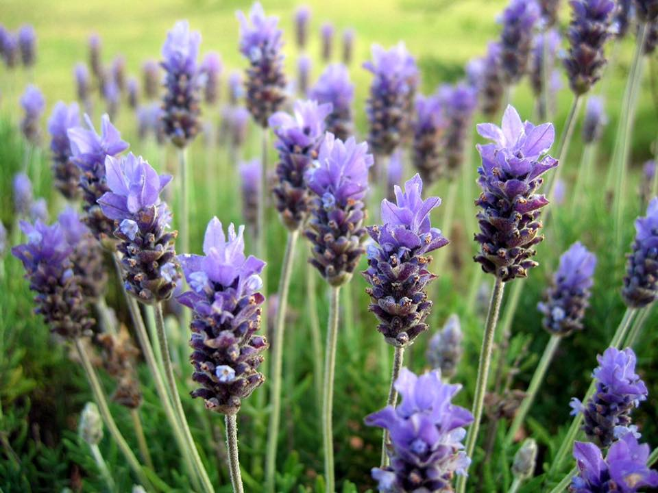
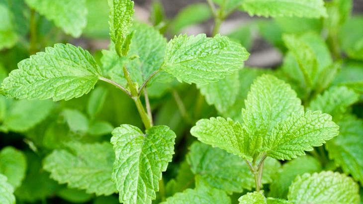
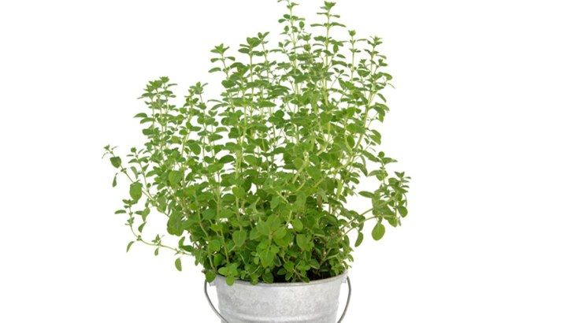
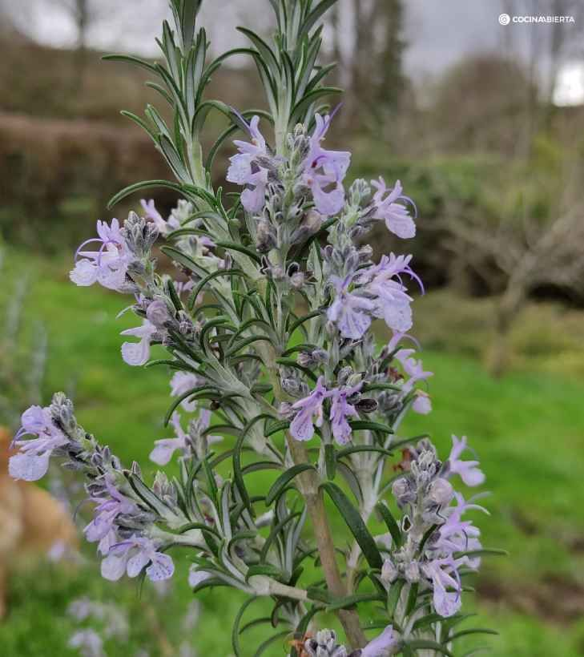
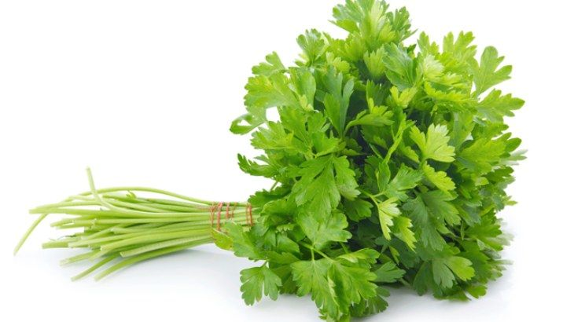

PLANTINES AROMATICOS
Manos que ven, manos que crean
PLANTINES
haz click sobre la foto para ver su descripción

La lavanda es una planta aromática muy apreciada por su fragancia y sus propiedades
beneficiosas. Su nombre científico es Lavandula y pertenece a la familia de las Lamiáceas.

La menta es una planta herbácea aromática perteneciente al género Mentha, de la familia de las
lamiáceas. Es ampliamente conocida y utilizada en todo el mundo por su fragancia refrescante y
sus diversas propiedades beneficiosas.

El orégano (Origanum vulgare) es una hierba aromática muy utilizada en la cocina por su sabor
característico y sus propiedades beneficiosas para la salud.
Gastronomía: El orégano es una especia muy utilizada en la cocina mediterránea, especialmente
en la italiana y la griega. Se utiliza para sazonar pizzas, pastas, salsas, ensaladas, carnes,
pescados y verduras.
Medicina tradicional: El orégano ha sido utilizado desde la antigüedad por sus propiedades
medicinales. Se le atribuyen efectos antioxidantes, antiinflamatorios, antimicrobianos,
antifúngicos y expectorantes. Se utiliza para aliviar problemas digestivos, respiratorios,
dolores de cabeza y heridas.

El romero es un arbusto leñoso que puede crecer hasta 2 metros de altura. Tiene hojas perennes,
estrechas y coriáceas, de color verde oscuro por el haz y blanquecinas por el envés. Sus flores
son pequeñas y se agrupan en racimos.
Aroma: El romero desprende un aroma intenso y característico, alcanforado y ligeramente
picante. Este aroma se debe a su alto contenido de aceites esenciales, como el cineol, el
alcanfor y el alfa-pineno.

El perejil (Petroselinum crispum) es una hierba aromática muy popular en la cocina mundial,
especialmente en la mediterránea. Se utiliza como condimento y decoración por su sabor
fresco y su atractivo color verde.

La planta de tomate cherry, cuyo nombre científico es Solanum lycopersicum var. cerasiforme, es una variedad de tomate apreciada por sus frutos pequeños, dulces y jugosos.
Características
Tamaño: Es una planta que puede crecer hasta 1-3 metros de altura, aunque también existen variedades enanas ideales para cultivar en macetas.
Hojas: Sus hojas son de color verde, con bordes dentados y un tacto ligeramente velloso.
Flores: Sus pequeñas flores amarillas se agrupan en racimos y florecen en primavera.
Frutos: Los tomates cherry son pequeños, redondos y crecen en racimos. Su color varía entre el rojo, amarillo, naranja y verde.
Crecimiento: Es una planta de crecimiento rápido y productiva, que requiere de 60 a 90 días para cosechar los primeros frutos después de la siembra.
Cultivo
La planta de tomate cherry es relativamente fácil de cultivar y se adapta bien a diferentes condiciones climáticas. Prefiere climas cálidos, con temperaturas entre 18°C y 26°C, y necesita de 6 a 8 horas de luz solar directa al día. Se recomienda sembrar las semillas en semilleros o macetas y trasplantarlas al huerto o maceta cuando la planta tenga unos 15 cm de altura.
Cuidados
Riego: Necesita riego regular, especialmente durante la floración y fructificación. Se debe evitar mojar las hojas para prevenir enfermedades.
Suelo: Prefiere suelos ricos en materia orgánica, bien drenados y con un pH entre 6.0 y 6.8.
Abono: Se recomienda aplicar abono orgánico o fertilizante rico en fósforo y potasio durante el crecimiento y la fructificación